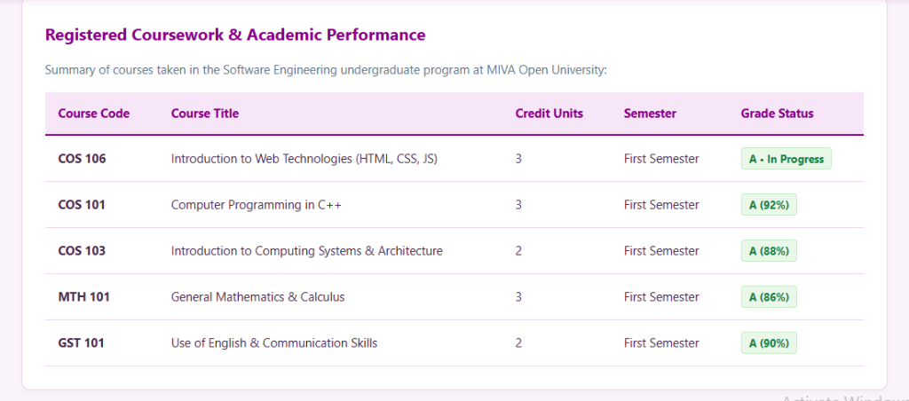
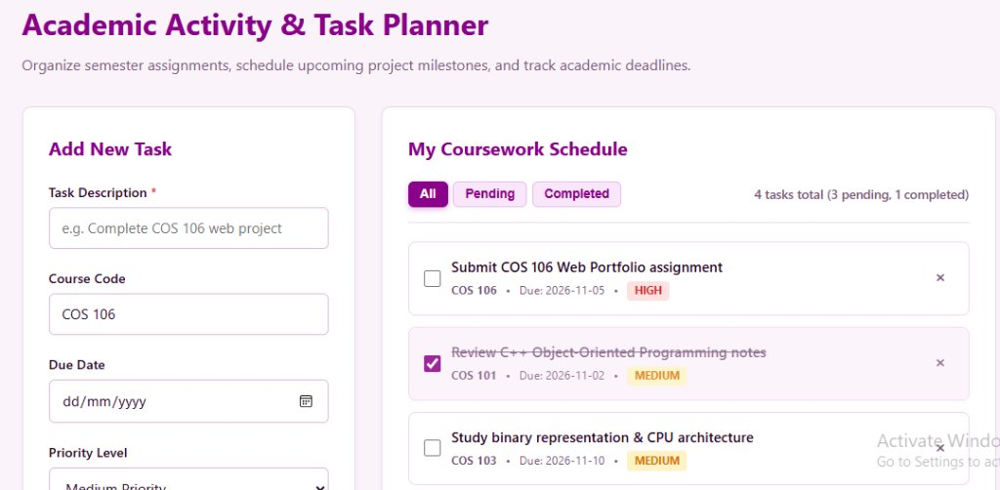
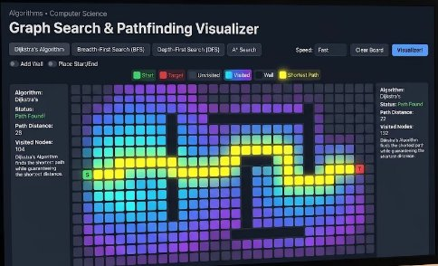

This project represents the practical term project for COS 106: Introduction to Web Technologies in the undergraduate Software Engineering curriculum at MIVA Open University. The website has been engineered as a multi-page personal academic portfolio and interactive student management hub designed to demonstrate foundational competence in core client-side web technologies: HTML5, CSS3, and JavaScript (ES6+).
As an undergraduate student in Software Engineering, keeping track of academic coursework, upcoming assignment deadlines, programming project repositories, and technical milestones across multiple courses often becomes fragmented. The purpose of this website is twofold:
index.html, about.html, projects.html, planner.html, and contact.html).assets/intro.mp4) embedded directly on the homepage hero section.localStorage API.#8B008B) visual hierarchy, incorporating CSS Flexbox, CSS Grid, smooth transitions, and mobile hamburger navigation.| Technology | Role in Project | Specific Concepts Applied |
|---|---|---|
| HTML5 | Structural Backbone | Semantic tags (<header>, <nav>, <main>, <section>, <article>, <footer>), HTML5 forms, data tables, and multimedia <audio> element. |
| CSS3 | Styling & Responsiveness | CSS Variables (:root), CSS Flexbox (navigation & cards), CSS Grid (layouts), responsive media queries (@media), hover transitions, and the #8B008B color palette. |
| JavaScript (ES6+) | Dynamic Interactivity | DOM selection, event listeners, array manipulation (.filter, .find, .forEach), Regex validation, and Web Storage API (localStorage). |
| Git & GitHub | VCS & Cloud Deployment | Branching, commit history tracking, and production hosting via GitHub Pages. |
The following section provides visual evidence and architectural explanations of the primary sections and features built into the website.
index.html)
What It Does: Acts as the primary entrance to the portfolio. It showcases my official student photograph, full name, matriculation number (2025/C/SENG/0801), student ID (301879012), and an introductory statement outlining my software development journey.
Implementation: Built using a semantic <section class="hero-card"> containing a circular avatar image and text content flexed horizontally on desktop and stacked vertically on mobile devices.
Windows + Shift + S, capture the full top Hero card (profile photo, name, matric number, bio, and buttons), and place it here.
assets/intro.mp4)What It Does: Fulfills the explicit rubric requirement for Multimedia (video or audio) in a creative and personal manner. Visitors can click the native audio player controls to listen to my voice recording introducing the portfolio.
Implementation: Configured using the HTML5 <audio controls preload="metadata"> element, wrapped in a styled linear gradient card (#8B008B to #2D042D). Dual <source> tags provide support for both MP4 (AAC voice note) and fallback audio formats.
about.html)What It Does: Fulfills the Tables technical requirement by presenting a structured record of my academic standing in the Software Engineering programme at MIVA Open University.
Implementation: Formatted with <table class="styled-table"> wrapped inside a <div class="table-responsive"> wrapper to allow horizontal scrolling on small mobile screens without breaking page geometry.

planner.html)What It Does: Provides an interactive task management application where users can input coursework tasks, assign course codes, set deadlines, mark tasks completed, and delete tasks.
Implementation: Implemented with CSS Grid (grid-template-columns: 360px 1fr). The left panel houses the HTML5 task creation form, and the right panel dynamically renders the task items, priority badges, and active filter tabs.

projects.html)What It Does: Displays three featured programming projects demonstrating problem solving across systems programming, web technologies, and computer science algorithms:

contact.html)What It Does: Allows visitors to submit inquiries or collaboration requests. JavaScript strictly verifies that no field is left blank, the email is syntactically valid, and the phone number consists solely of numbers before accepting the message.
Windows + Shift + S, and capture the form with inline error alerts.
The JavaScript architecture across this project demonstrates proficiency in client-side scripting without relying on external libraries or frameworks. Below is an explanation of the core JavaScript concepts implemented:
Where Implemented: Throughout js/main.js, js/planner.js, and js/validation.js.
Concepts Used: document.getElementById(), document.querySelectorAll(), document.createElement(), appendChild(), and classList.toggle().
How It Works: Rather than injecting raw unchecked HTML into the page, tasks are constructed programmatically as DOM element nodes, ensuring proper HTML escaping to prevent XSS (cross-site scripting) vulnerabilities.
Where Implemented: Task list interactions in js/planner.js.
Concepts Used: Event Delegation via parentElement.addEventListener('click', handler).
Technical Justification: Because tasks are added and removed dynamically, attaching individual event listeners to every single checkbox and delete button would cause memory leaks and fail on newly created elements. By attaching a single listener to the parent container (#taskList) and inspecting event.target, any dynamically created task element is handled efficiently.
Where Implemented: Task collection in js/planner.js.
Concepts Used: Array of objects, .filter(), .find(), .unshift(), and .forEach().
How It Works: The task list is treated as an in-memory application state:
Date.now()) is added to the start of the array using tasks.unshift(newTask).tasks.filter() to compute whether to display all tasks, pending tasks (!task.completed), or completed tasks (task.completed).tasks = tasks.filter(t => t.id !== targetId).
Where Implemented: Contact form in js/validation.js.
Concepts Used: Form submission interception (e.preventDefault()), RegEx matching (pattern.test()), string trimming (.trim()), and real-time blur listeners.
Validation Rules:
input.value.trim() === ""./^[a-zA-Z0-9._%+-]+@[a-zA-Z0-9.-]+\.[a-zA-Z]{2,}$/./^\d+$/ (strictly digits) and /^\d{7,15}$/ (valid international/domestic phone length).localStorage)
Where Implemented: Task storage in js/planner.js.
Concepts Used: localStorage.setItem(), localStorage.getItem(), JSON.stringify(), and JSON.parse().
How It Works: Whenever a task is created, toggled, or deleted, the tasks array is serialized into JSON and written to key "miva_student_planner_victoria". On page load, the script reads this key and parses the data, ensuring zero data loss upon page reloads.
This section extracts critical code snippets from the project, detailing the implementation rationale, the problem each block solves, and how it upholds software engineering best practices.
js/validation.js)
Rationale: The assignment explicitly states that validation must guarantee non-empty inputs, proper email format, and digits-only phone numbers. We separate error UI management into dedicated helper functions (showError and clearError) to keep validation logic concise and maintainable.
// Validation patterns
const emailPattern = /^[a-zA-Z0-9._%+-]+@[a-zA-Z0-9.-]+\.[a-zA-Z]{2,}$/;
const phonePattern = /^\d{7,15}$/;
// Validation function for Phone Number (strictly digits only)
function validatePhone() {
const val = phoneInput.value.trim();
if (val === "") {
showError(phoneInput, phoneError, "Phone number cannot be empty.");
return false;
} else if (!/^\d+$/.test(val)) {
showError(phoneInput, phoneError, "Phone number must contain digits only.");
return false;
} else if (!phonePattern.test(val)) {
showError(phoneInput, phoneError, "Phone number must be between 7 and 15 digits.");
return false;
}
clearError(phoneInput, phoneError);
return true;
}js/planner.js)Rationale: Demonstrates understanding of the JavaScript event bubbling model. When users click dynamically rendered elements inside the task container, the parent listener checks the clicked element's class list and updates the data model accordingly.
// Event delegation for checkbox toggle and delete button
taskListContainer.addEventListener("click", function (e) {
const target = e.target;
// Checkbox toggle: mark completed or pending
if (target.classList.contains("task-checkbox")) {
const taskId = Number(target.getAttribute("data-id"));
const foundTask = tasks.find(t => t.id === taskId);
if (foundTask) {
foundTask.completed = target.checked;
saveTasks(); // Persist updated state to localStorage
renderTasks(); // Re-render DOM
}
}
// Delete button click
if (target.classList.contains("btn-delete")) {
const taskId = Number(target.getAttribute("data-id"));
if (confirm("Are you sure you want to delete this task?")) {
tasks = tasks.filter(t => t.id !== taskId);
saveTasks();
renderTasks();
}
}
});js/main.js)
Rationale: Handles mobile screen viewports gracefully by toggling an .open CSS class on the navigation menu when the hamburger button is clicked. It also closes automatically when clicking outside the menu.
document.addEventListener("DOMContentLoaded", function () {
const navToggle = document.getElementById("navToggle");
const navMenu = document.getElementById("navMenu");
if (navToggle && navMenu) {
navToggle.addEventListener("click", function () {
navMenu.classList.toggle("open");
});
// Close menu when clicking anywhere outside the navbar
document.addEventListener("click", function (event) {
if (!navToggle.contains(event.target) && !navMenu.contains(event.target)) {
navMenu.classList.remove("open");
}
});
}
});css/style.css)
Rationale: Establishes a maintainable Design System using CSS custom properties. By binding the primary theme to --primary-color: #8B008B; in the :root pseudo-class, design changes propagate universally across all five pages without search-and-replace hazards.
:root {
--primary-color: #8B008B; /* Dark Magenta theme */
--primary-hover: #730073; /* Deeper Magenta hover */
--primary-light: #fae6fa; /* Light Magenta tint */
--accent-color: #9932CC; /* Dark Orchid accent */
--dark-bg: #1a021a; /* Deep Plum for Nav & Footer */
--light-bg: #faf4fa; /* Soft tinted background */
--card-bg: #ffffff; /* Clean card surface */
--border-color: #eed6ee; /* Soft magenta border */
--text-primary: #240524; /* Rich dark plum text */
--transition: all 0.25s ease-in-out;
}This section prepares me to confidently answer oral examination questions from the Web Technologies lecturer during project defence.
JSON.stringify() and saved to browser localStorage under a unique key. localStorage was selected because it provides synchronous, client-side persistence up to ~5MB without requiring backend servers or database infrastructure, making it ideal for a standalone web portfolio.
js/validation.js, the phone number is verified using a regular expression: /^\d+$/. The caret (^) asserts the start of the string, \d+ asserts one or more numeric digits, and the dollar sign ($) asserts the end of the string. If any non-digit character (such as letters, spaces, or hyphens) is present, the test evaluates to false and triggers an inline error message.
#8B008B) color was selected to create an engaging, modern, and distinctive academic aesthetic while maintaining high contrast ratios for readability. Visual consistency is guaranteed across all five pages through CSS variables declared in the :root block of css/style.css.
intro.mp4) right on the homepage hero section. This provides an engaging audio introduction that makes the portfolio personal, professional, and unique.
width=device-width, initial-scale=1.0), and media queries (@media (max-width: 768px)). On screens smaller than 768px, horizontal two-column grids stack into single-column layouts, tables enable horizontal scrolling, and navigation collapses into a responsive hamburger menu.
The development of this portfolio platform for COS 106 has reinforced my understanding of front-end engineering fundamentals. By adhering strictly to semantic markup, mobile-first responsive styling, and modular JavaScript without framework bloat, the resulting application is lightweight, performant, and fully functional.
Every rubric requirement set by the School of Computing at MIVA Open University has been satisfied:
| Assessment Requirement | Project Demonstration | Self-Assessment Status |
|---|---|---|
| Semantic HTML5 Elements | Used across all 5 pages (<header>, <nav>, <main>, <section>, <article>, <footer>) |
✓ Complete |
| Interactive Forms | Contact form with RegEx validation & Task creation form in planner | ✓ Complete |
| Structured Tables | Registered Coursework Table & Technical Skills Matrix in about.html |
✓ Complete |
| Multimedia (Video/Audio) | Personal audio welcome recording (assets/intro.mp4) with native player controls |
✓ Complete |
| CSS Flexbox & Grid | Two-column planner layout, project cards grid, navbar layout, and hero section | ✓ Complete |
| External CSS Stylesheet | Centralized css/style.css utilizing custom variables (#8B008B theme) |
✓ Complete |
| Interactive Task System | Full task lifecycle (Add, Complete, Filter, Delete) with localStorage |
✓ Complete |
| Public Hosting & GitHub Repo | Live deployment on GitHub Pages with public repository link | ✓ Complete |